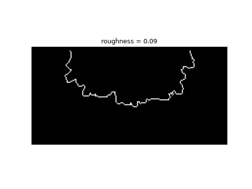

sandplover.plan.compute_shoreline_roughness_coefvar¶
- sandplover.plan.compute_shoreline_roughness_coefvar(shore_mask, origin=(0, 0))¶
Compute shoreline roughness, as coefficient of variation.
Computes the shoreline roughness metric:
\[R = \sqrt{1/N \sum_{i=1}^N \left( \frac{r_{i}-\bar{r}}{\bar{r}}\right)^2}\]where R is the roughness of the shoreline, N is the total number of pixels defining the shoreline, \(r_i\) is the individual distance measurement to each point of the shoreline, and \(\bar{r}\) is the mean distance from origin to the shoreline in shore_mask (after [1]). This metric is consistent with a measure of the coefficient of variation for distances from the channel inlet to the shoreline.
Note
Internally,
compute_shoreline_distanceis used to compute the distances to \(r_i\) and mean distance to the shoreline \(\bar{r}\).See also
This function is similar to, but distinct from
compute_shoreline_roughness_area, which uses an approach ased on the shoreline convexity to characterize the shoreline.- Parameters:
shore_mask (
ShorelineMask,ndarray) – Shoreline mask. Can be aShorelineMaskobject, or a binarized array.origin (
tuple,np.ndarray, optional) – Origin from which the distance to all shoreline points is computed, specified in data dimensions (not indices) along dim1, dim2 of the data. Default (0, 0).
- Returns:
roughness – Shoreline roughness, computed as described above.
- Return type:
float
Examples
Calculate the shoreline roughness.
>>> from sandplover.mask import ShorelineMask >>> from sandplover.plan import compute_shoreline_roughness_coefvar >>> from sandplover.sample_data.sample_data import golf
>>> golf = golf() >>> sm = ShorelineMask( ... golf["eta"][-1, :, :], elevation_threshold=0, elevation_offset=-0.5 ... ) >>> sm.trim_mask(length=golf.meta["L0"].data + 1) >>> origin = ( ... np.array([golf.meta["L0"].data, golf.meta["CTR"].data]) ... * golf.meta["dx"].data ... )
Compute roughness
>>> rough = compute_shoreline_roughness_coefvar(sm, origin=origin)
>>> fig, ax = plt.subplots() >>> sm.show(ax=ax) >>> _ = ax.set_title("roughness = {:.2f}".format(rough))
(
Source code,png,hires.png)
See also
See this example, which compares all of the “shoreline roughness” metrics implemented in sandplover.
{kind=link}
{kind=link}